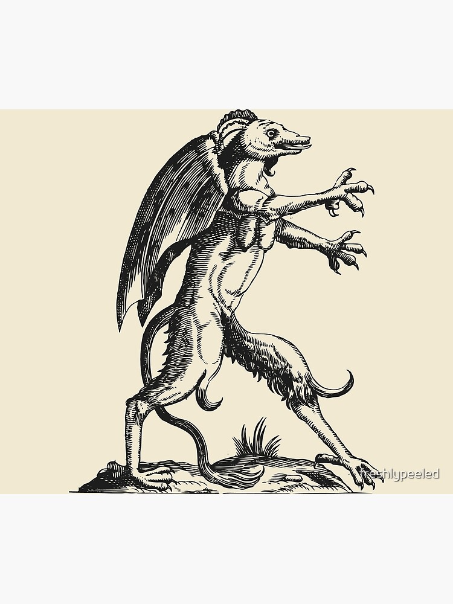

Хто ховається в тіні?
Вітаю у моєму притулку. Я — Тінник, літописець історій, що народжуються на межі світла та темряви.
"Гільдія Тіней" — це не просто назва, це мій світ. Світ, де магія переплетена з реальністю. Я вірю, що найтемніші історії часто несуть найяскравішу надію.
Моя мета — створити всесвіт, у якому ви зможете загубитися і знайти себе одночасно.
Анкета Тіней
Паливо
Міцна чорна кава та нічна тиша.
Натхнення
Філософія, легенди, Лавкрафт та осінні ліси.
Інструмент
Усе, на чому можна писати.
Час
Коли натхнення, але в загальному увечері.